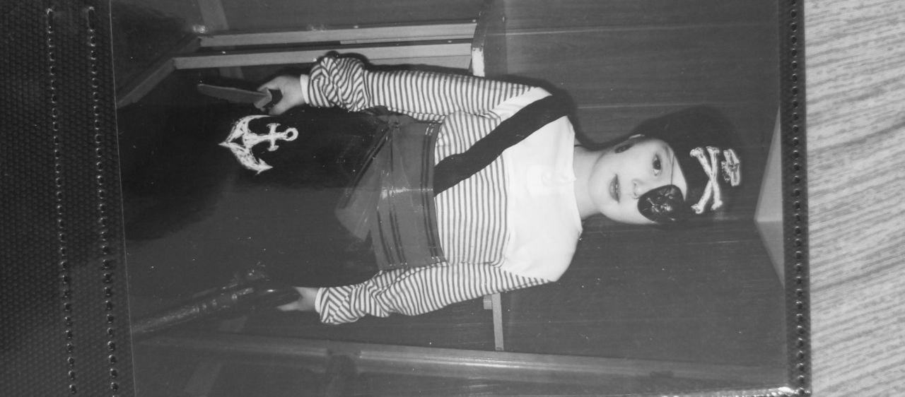
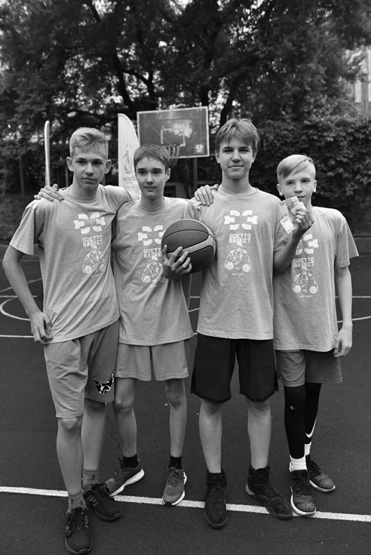
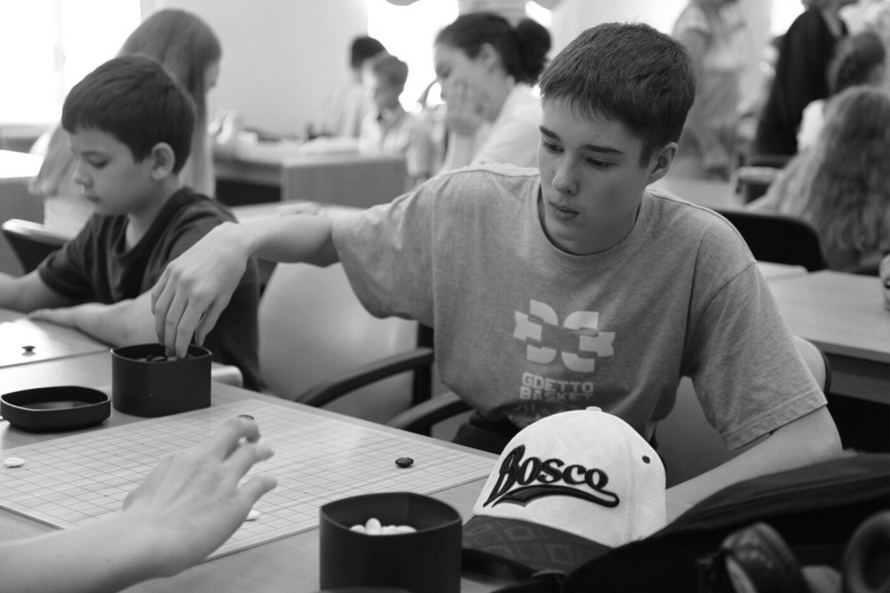
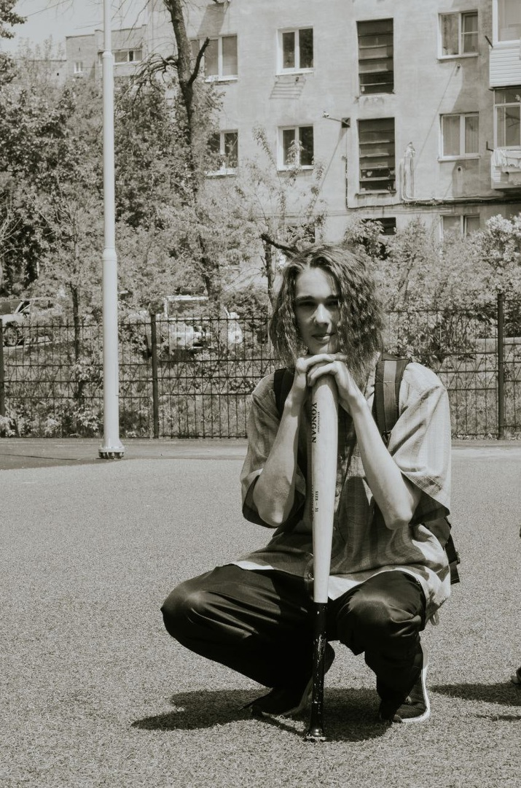

Chronology of life
first but not last
Nikita Safonov’s life journey, like all living things, began at birth. He was the first child in the family, but not the last. He was born very large compared to his peers, but was often sick, which worried his parents.
Garden of Horrors
When Nikita Safonov grew up a little, he was sent to kindergarten. He really didn’t like going there; according to him, there were only “fools” there. But with courage and a couple of buckets of shed tears, he overcame this difficult period.
Maximum Luck
Nikita Safonov earned his first money completely by accident. One day he was sitting and just playing on the computer, but then his classmate Gosha wrote to him and invited him to a city streetball tournament. As a result, +5 thousand by 4.
Go game
In 2019, Nikita Safonov went to the children's championship in Khabarovsk. By that time, he had not been training for so long, but he took 19th place in the overall table.
day before
Before graduating from 11th grade, Nikita Safonov’s classmates decided to have a day of disobedience and dress up in the “90s” style. The next day Nikita shaved his hair.
